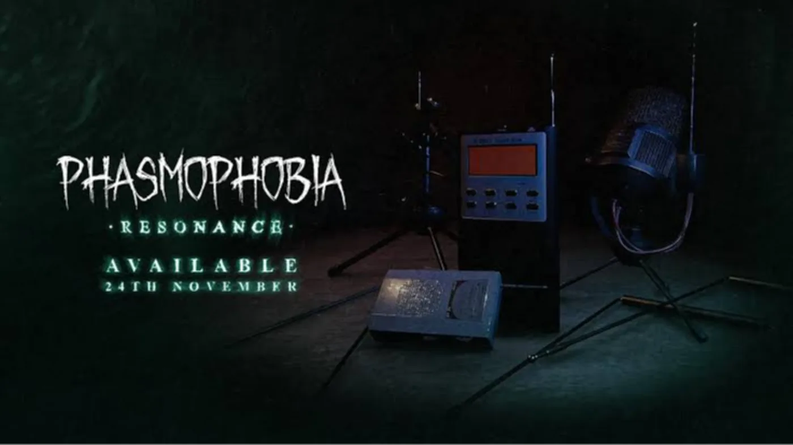

Luiso · 18 de noviembre de 2026 · 3 min de lectura
Uno de los principales agregados será la incorporación de las Dowsing Rods, unas varillas de radiestesia que permitirán localizar el hueso presente en cada escenario. Esta herramienta estará disponible desde el lanzamiento de la actualización y buscará facilitar las investigaciones, especialmente en mapas de grandes dimensiones como Brownstone High School. Habrá distintos niveles de equipamiento: las versiones iniciales señalarán una dirección aproximada, mientras que las de nivel 3 podrán ofrecer una ubicación mucho más precisa e incluso indicar en qué piso se encuentra el objeto.
También recibirá una revisión el Sound Sensor, un dispositivo que hasta ahora tenía un uso limitado dentro de las investigaciones. Con Resonance, su interfaz mostrará información más precisa sobre el origen de los sonidos detectados. Los indicadores permitirán distinguir entre ruidos que se mantienen durante un tiempo y aquellos que aparecen como eventos puntuales. Además, el sensor podrá ayudar a identificar el tipo de fantasma a partir de la velocidad de sus movimientos, una función que podría resultar especialmente útil durante una cacería.
Más posibilidades para interactuar con los fantasmas
El reconocimiento de voz también tendrá nuevas funciones. A partir de la actualización, los jugadores podrán utilizar comandos para pedirle al fantasma que interactúe con determinados objetos cercanos, como puertas y interruptores, o que realice acciones como arrojar elementos para manifestar su presencia. Estas opciones estarán disponibles tanto para quienes utilizan el reconocimiento de voz tradicional como para quienes tienen configurado el modo de texto.
Para facilitar su uso, el diario de investigación incorporará una lista con las frases disponibles. Así, los jugadores podrán consultar qué instrucciones reconoce el sistema sin tener que probar comandos al azar durante una investigación.
Otra modificación estará relacionada con la selección de escenarios. El equipo permitirá elegir varios mapas para crear una rotación aleatoria personalizada, además de incorporar accesos rápidos para seleccionar escenarios pequeños, medianos o grandes. La idea es ofrecer más control sobre las partidas sin perder la posibilidad de dejar que el juego elija el próximo destino.
El salto a Unity 6 apunta a mejorar el rendimiento y la estabilidad
Más allá de las novedades jugables, el cambio a Unity 6 representa uno de los aspectos centrales de Resonance. Según explicó Kinetic Games, la migración busca mejorar la estabilidad general, el rendimiento y la experiencia de juego, además de preparar la base tecnológica para futuras actualizaciones.
El estudio aseguró que una parte importante de los errores reportados por la comunidad ya fue corregida durante el trabajo con esta nueva versión del motor. Entre los problemas que esperan solucionar se encuentran varios de los cierres inesperados que experimentaban algunos usuarios. También se realizaron mejoras en la iluminación de los escenarios para conseguir ambientes más realistas e inmersivos.
La actualización sumará distintas opciones gráficas, ajustes de calidad de sombras y configuraciones generales de rendimiento. En materia de accesibilidad, se incorporarán alternativas para personas con diferentes formas de daltonismo, entre ellas protanopia, deuteranopia, tritanopia y acromatopsia.
Por otra parte, Phasmophobia se sumará al programa Xbox Play Anywhere. Esto permitirá que quienes tengan la edición digital del juego para Xbox puedan acceder también a la versión compatible con PC, laptops y dispositivos como ROG Ally, sin necesidad de comprarlo nuevamente en cada uno de esos equipos.
Un paso más hacia la versión 1.0
Desde Kinetic Games describieron Resonance como una de las actualizaciones más importantes del juego hasta el momento, tanto por la cantidad de cambios como por lo que representa para su desarrollo a largo plazo. El estudio también confirmó que continúa trabajando para alcanzar la versión 1.0 de Phasmophobia, cuyo lanzamiento está previsto para fines de 2027.
Las notas completas del parche se publicarán cuando la actualización esté disponible. Por ahora, el 24 de noviembre será la fecha en la que los cazadores de fantasmas podrán probar las nuevas herramientas, experimentar los cambios en la iluminación y comprobar qué mejoras concretas aporta la migración a Unity 6.
Cargando comentarios…